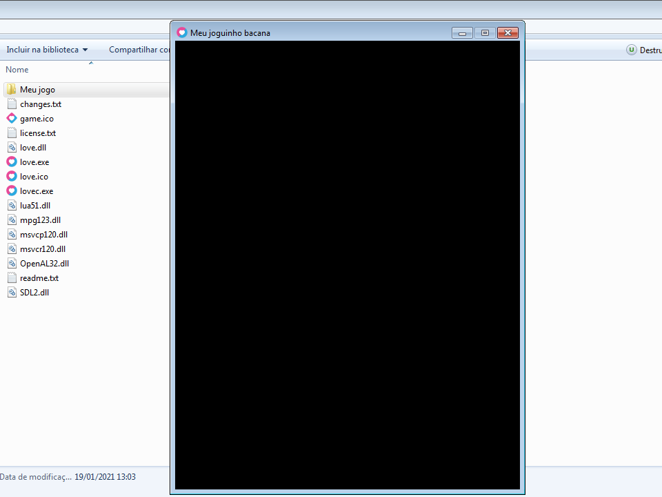
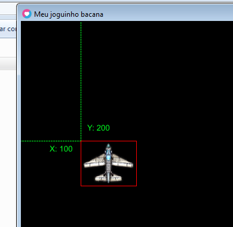

Seu primeiro jogo em 200 linhas - Parte 1
Então você está interessado em programar usando o LÖVE mas não sabe onde começar? Não se preocupe, este tutorial vai te ensinar na prática o básico que você precisa para começar a fazer seus jogos por conta própria.
O LÖVE usa a linguagem de programação Lua, é uma linguagem simples, poderosa e muito fácil de aprender. Você pode seguir este tutorial mesmo tendo pouca experiência com Lua, ou até mesmo se só sabe o básico de programação em geral. Caso tenha alguma dúvida ao longo deste tutorial, consulte a documentação.
Este tutorial foi feito com base nesse do OSMstudios. Esse tutorial me ajudou bastante quando eu estava começando, porém ele está desatualizado, então eu decidi fazer um tutorial parecido em português usando a versão 11.3 do LÖVE.
Assim como no original, este tutorial está dividido em 3 partes para não ficar uma leitura muito cansativa: parte 1, parte 2 e parte 3
Passo 1: Preparando o ambiente
Vá até a página inicial do LÖVE e baixe a versão correspondente ao seu sistema operacional. Neste tutorial eu vou usar a versão do Windows 64-bits zipped, você pode conseguir mais informações de como executar o LÖVE aqui caso esteja usando outro sistema operacional.
Crie uma pasta chamada "love2d" em qualquer lugar e extraia todos os arquivos do LÖVE nela. Depois crie uma pasta dentro dela chamada "Meu jogo", você vai colocar todos os arquivos do seu jogo nela.
Em seguida você vai precisar de um editor de código. Eu uso o Visual Studio Code, porém há boas alternativas como o Sublime Text, ZeroBrane e Atom. Para o Android eu só posso recomendar o Quoda.
Passo 2: Configurando o jogo
Abra a pasta "Meu Jogo" e crie um arquivo chamado "conf.lua", depois abra esse arquivo e coloque:
function love.conf(t)
t.title = "Meu joguinho bacana"
t.window.width = 500
t.window.height = 650
t.window.usedpiscale = false --Caso esteja no Android
end
Esse arquivo serve para configurar a janela do jogo e outros recursos, ele não é obrigatório para a execução do LÖVE mas nesse tutorial nós vamos precisar dele. No código acima nós definimos o título da janela para "Meu joguinho bacana" e também definimos a resolução da janela para 500x650. A última opção evita um comportamento bem chato no Android, nos outros sistemas operacionais essa opção não faz nada. Aqui estão todas opções que você pode modificar junto com os valores padrões.
Crie um outro arquivo chamado "main.lua". Esse é o arquivo principal e é a partir dele que o LÖVE irá executar o seu jogo, lembre-se que ele precisa estar na raíz do diretório do seu jogo. Dentro desse arquivo, coloque:
function love.load()
end
function love.draw()
end
function love.update(dt)
end
Aqui nós definimos 3 funções importantes:
love.load(): É executada apenas 1 vez no início do programa depois que o LÖVE for inicializado. É aqui onde você vai carregar arquivos externos como imagens, áudios, etc. Não é obrigatório usar essa função, você pode muito bem carregar o que você precisa diretamente no corpo do arquivo, mas é uma boa prática fazer isso dentro do love.load.
love.draw(): É executado a cada frame. É onde você vai desenhar imagens, textos ou qualquer outra coisa gráfica na tela.
love.update(dt): Também é executado a cada frame e é onde você vai colocar a lógica do seu jogo.
O argumento dt (delta time) é o tempo passado desde a última vez que essa função foi chamada. Nós usaremos esse número em todas as operações que são atualizadas constantemente (como temporizadores, movimentação do jogador, etc)
para garantir que o jogo mantenha a mesma velocidade independente de quantos FPS ele está rodando. Aqui tem uma pequena explicação sobre a importância do delta time, é sobre o Unity mas se aplica aqui também.
Essas 3 funções são callbacks, nós definimos o que elas fazem e o LÖVE irá chamá-las automaticamente.
Feito isso, você já deve conseguir executar o seu jogo. Vá até a pasta "love2d" e arraste a pasta "Meu jogo" em cima do executável "love.exe".
Você vai ver uma janela preta com a resolução e título que nós configuramos. Admito que uma tela preta não é a coisa mais excitante do mundo, mas felizmente é a partir daqui que começa a ficar divertido.
Passo 3: desenhando uma imagem na tela
Para desenhar uma imagem na tela, primeiro nós precisamos... da imagem. Eu vou estar usando esses sprites de aviões que estão disponíveis gratuitamente no site OpenGameArt.
Para o jogador eu vou usar o sprite Aircraft_10.png. Dentro da pasta "Meu jogo", crie uma outra pasta chamada "imagens", mova a imagem para ela e renomeie o arquivo para "jogador.png". Agora nós precisamos carregar essa imagem na memória para podermos usá-la, nós vamos fazer isso dentro da função love.load que nós criamos no main.lua:
jogadorImg = nil
function love.load()
jogadorImg = love.graphics.newImage("imagens/jogador.png")
end
Primeiro nós criamos uma variável global chamada jogadorImg com valor inicial nil, é nela onde vamos carregar a nossa imagem. Em seguida, dentro do love.load, nós usamos a função love.graphics.newImage e passamos o caminho da imagem que queremos carregar como argumento. Essa função irá retornar um objeto do tipo Image, que contém os dados da imagem carregada e algumas funções úteis.
Agora podemos desenhar nossa imagem na tela. Nós vamos fazer isso dentro da função love.draw:
function love.draw()
love.graphics.draw(jogadorImg, 100, 200)
end
A função love.graphics.draw serve para desenhar uma imagem na tela. O primeiro argumento é a imagem que vamos desenhar, o segundo e terceiro argumento são as posições x e y da tela onde a imagem será desenhada. Note que essa e qualquer outra função que desenha algo na tela precisa ser executada dentro do love.draw constantemente.
Execute o jogo novamente e você finalmente verá algo desenhado:

Há 2 coisas importantes que você precisa lembrar:
1 - O eixo X segue da esquerda para a direita, onde X = 0 é o canto esquerdo da tela e X = (largura da tela) é o canto direito. Diferente de algumas engines como o Unity, o eixo Y segue do topo para baixo, onde Y = 0 é o canto superior da tela e Y = (altura da tela) é o canto inferior.
2 - Por padrão, a posição em que as imagens são desenhadas na tela são referentes ao canto superior esquerdo da imagem:
E com isso nós terminamos a primeira parte do nosso tutorial. Na parte 2 é onde nós vamos realmente botar a mão na massa e fazer a movimentação do jogador.
Ir para a parte 2